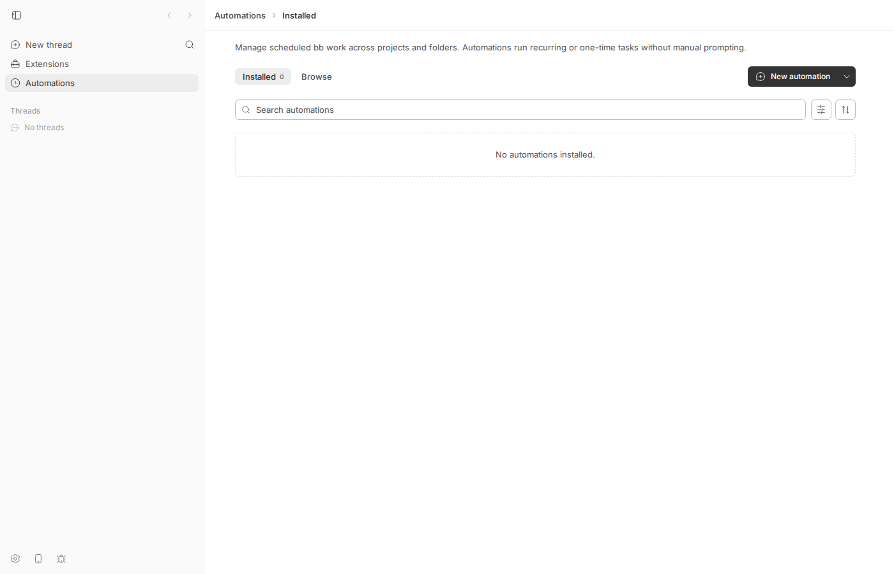
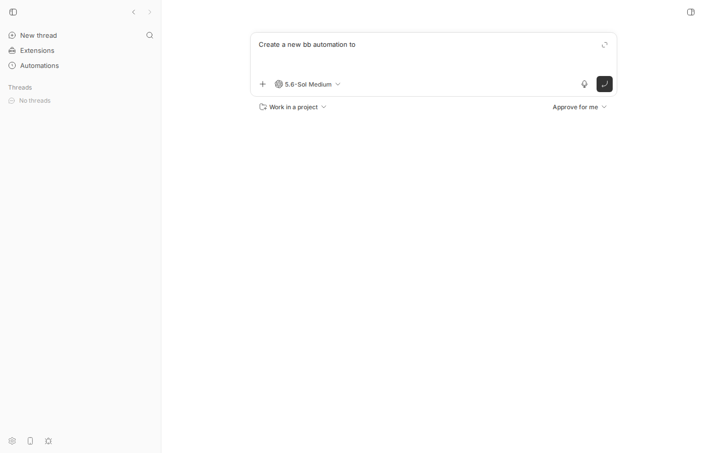
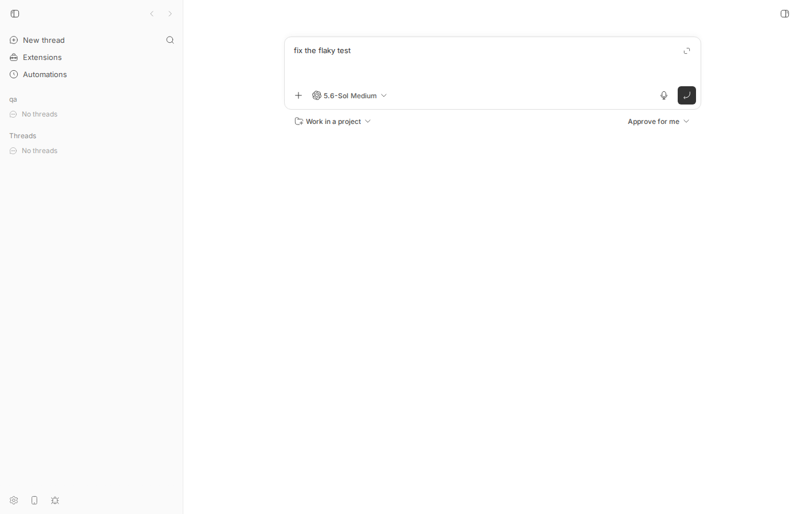

#1776 · Clicking "Create automation" doesn't create an automation
TL;DR
What the user sees. On the Automations page there is one primary button, labelled New automation (there is no button literally labelled "Create automation" anywhere in the app; the issue paraphrases). Clicking it does not open a form or create anything: it navigates to the root New thread composer. That is exactly what the one-line issue says: "It just takes you to the Create thread UI".
What is actually going on. The button is, by design, a "create via chat" affordance: it is supposed to land you on the New thread composer pre-filled with Create a new bb automation to so you finish the sentence and an agent uses the automations skill / bb automation create CLI to build it. Two things make that read as "does nothing": (1) nothing on the Automations page or in the composer says this is how automations are created (no tooltip, no banner, the button icon is a chat bubble but the label is "New automation"), and (2) the pre-fill is applied with a "restore only if the draft is empty" rule. bb persists your New thread draft in localStorage; if you ever typed anything into New thread and left it, the automation prefix is silently dropped and you land on the New thread page showing your old draft. In that state there is literally no trace of "automation" on screen. I reproduced both states in the browser on the base commit and wrote a vitest that fails on main for state (2).
Why. plugins/automations/app.tsx calls the plugin SDK's navigate.toCompose({ focusPrompt: true, initialPrompt: "Create a new bb automation to " }). useBbNavigate().toCompose (apps/app/src/lib/plugin-sdk-hooks.ts) pushes / with that state and no replaceInitialPrompt flag (the SDK contract has no way to ask for it), so RootComposeView uses restorePromptDraftIfEmpty, a no-op whenever a draft exists. The first-party "New skill" button uses replaceInitialPrompt: true, so it does not have this problem; the automations plugin cannot.
Claims vs findings
| Claim | Status | Evidence |
|---|---|---|
| There is a "Create automation" button | Partially — label is "New automation" | grep -rniE "create (an )?automation" over the repo finds no UI label; the only Automations page action is <ResourceCreateButton label="New automation"> (plugins/automations/overview-view.tsx#L477-L481). Screenshot 01. |
| Clicking it does not create an automation | Verified | The click handler is navigate.toCompose(...) (plugins/automations/app.tsx#L575-L583); nothing calls automations_create. No row is created (list stays "No automations installed"). |
| It "just takes you to the Create thread UI" | Verified, two flavours | Empty draft: lands on New thread with the composer pre-filled Create a new bb automation to (screenshot 03). Existing draft: lands on New thread showing the old draft, no automation seed at all (screenshot 05; vitest fails on main). |
| (implicit) this is a regression | Refuted | Create-via-chat has been the design since #845/#888 (Aug 2026, "Separate Automations from Extensions"); no form ever existed. Nothing on origin/main after the base commit touches this path (git log 16ceb3a54..origin/main -- plugins/automations apps/app/src/views/RootComposeView.tsx apps/app/src/lib/plugin-sdk-hooks.ts is empty for these files). |
Environment
- bb
16ceb3a540f81c1189efaffb27a39b1d9443abf5(main, 2026-08-18), worktree/home/sawyer/projects/bb/.claude/worktrees/wf_242c3e11-a10-47checked out detached at the base commit. - Linux 7.0.0-29-generic (Ubuntu), node v24.18.0, pnpm workspace build via
pnpm exec turbo run build. No provider turns were run (the bug is entirely client-side). - Dev instance:
scripts/bb-dev-app current→ Apphttp://localhost:17447, Serverhttp://localhost:25447, Host daemonhttp://127.0.0.1:33447, data dir/home/sawyer/.bb-dev/projects-bb-.claude-worktrees-wf_242c3e11-a10-47-d47fa26f8b11. Hosthost_ym5k45cue2, one projectproj_ce6uayq5y6("qa", local path/tmp/bb-1776-qa) so the root route renders the composer instead of the empty-welcome screen. - Browser: headless Chromium via
dev-browser(Playwright), viewport 1400×900.
Minimal reproduction
A. Browser, empty draft (what a fresh user sees)
- Build and start a dev instance:
pnpm install --frozen-lockfile --prefer-offline && pnpm exec turbo run build && scripts/bb-dev-app current. Create one project so the root page shows the composer (Appendix has the curl). - Open
http://localhost:<app port>/automations. Observe the only action is New automation (screenshot 01). - Click New automation.
Expected (reporter's expectation): an automation is created, or at least a create flow (form / dialog / clearly labelled agent handoff) starts. Actual: the URL becomes / (the New thread page); the composer contains Create a new bb automation to ; nothing explains that you are supposed to finish the sentence and send it to an agent. Script: 1776/repro/step2-click-new-automation.js. Output:
$ dev-browser --browser bb1776 --headless run /tmp/bb-reports/issues/1776/repro/step2-click-new-automation.js
url after click: http://localhost:17447/
composer text: "Create a new bb automation to "
localStorage draft keys: [["bb.promptbox.contents-draft-3","{\"text\":\"Create a new bb automation to \",\"attachments\":[]}"]]


B. Browser, a New thread draft already exists (the seed is dropped)
- Go to
/(New thread), type anything in the composer, e.g.fix the flaky test, and do not send it (bb persists it as the New thread draft). - Navigate to
/automationsand click New automation.
Expected: the automation prompt is visible (or the button explains what will happen). Actual: New thread page with the old draft fix the flaky test; the automation prefix is silently discarded. Script: 1776/repro/step3-click-with-existing-draft.js. Output:
$ dev-browser --browser bb1776 --headless run /tmp/bb-reports/issues/1776/repro/step3-click-with-existing-draft.js url after click: http://localhost:17447/ composer text: "fix the flaky test"

C. Unit-level repro (vitest, fails on main)
File: 1776/repro/Issue1776NewAutomationSeed.repro.test.tsx (place it at apps/app/src/components/plugin/Issue1776NewAutomationSeed.repro.test.tsx; the mock harness at the top is copied verbatim from PluginNewThreadComposer.test.tsx in the same directory). It renders the real RootComposeView in a memory router with exactly the location state that useBbNavigate().toCompose produces for the automations button, once with an empty persisted draft (passes) and once with a leftover draft (fails: the composer keeps the draft). Run: cd apps/app && pnpm exec vitest run src/components/plugin/Issue1776NewAutomationSeed.repro.test.tsx. Test body:
describe("issue #1776: New automation -> root compose seed", () => {
beforeEach(() => {
mocks.promptBoxProps.length = 0;
mocks.copyAttachments.mockReset();
mocks.uploadAttachment.mockReset();
mocks.threadsLoading = false;
window.localStorage.clear();
getPromptDraftAccessor({ kind: "new-thread" }).setDraft({
text: "",
mentions: [],
attachments: [],
});
});
afterEach(() => {
cleanup();
});
function renderRootCompose(state: Record<string, unknown>) {
const queryClient = new QueryClient({
defaultOptions: { queries: { retry: false } },
});
window.localStorage.setItem("bb.root-compose.project-id", "proj_1");
const router = createMemoryRouter(
[{ path: "/", element: <RootComposeView /> }],
{ initialEntries: [{ pathname: "/", state }] },
);
render(
<Provider>
<QueryClientProvider client={queryClient}>
<RouterProvider router={router} />
</QueryClientProvider>
</Provider>,
);
return router;
}
// Exactly what plugins/automations "New automation" sends through
// useBbNavigate().toCompose (apps/app/src/lib/plugin-sdk-hooks.ts).
const NEW_AUTOMATION_STATE = {
focusPrompt: true,
initialPrompt: "Create a new bb automation to ",
};
it("PASSES on main: seeds the automation prompt when the new-thread draft is empty", async () => {
const router = renderRootCompose(NEW_AUTOMATION_STATE);
await waitFor(() => {
expect(latestPromptBoxProps().value).toBe(
"Create a new bb automation to ",
);
});
await waitFor(() => {
expect(
readInitialPromptFromLocationState(router.state.location.state),
).toBeNull();
});
});
it("FAILS on main: the automation seed is silently dropped when a new-thread draft already exists", async () => {
const rootDraft = getPromptDraftAccessor({ kind: "new-thread" });
rootDraft.setDraft({
text: "fix the flaky test",
mentions: [],
attachments: [],
});
const router = renderRootCompose(NEW_AUTOMATION_STATE);
// Wait for the location-state effect to consume the seed.
await waitFor(() => {
expect(
readInitialPromptFromLocationState(router.state.location.state),
).toBeNull();
});
// What the user sees: the composer still holds the leftover draft.
// Expected (per the button's intent): the automation prompt is visible.
expect(latestPromptBoxProps().value).toContain(
"Create a new bb automation to ",
);
});
});
Output (full log): the second test fails with expected 'fix the flaky test' to contain 'Create a new bb automation to '.
RUN v4.1.1 /home/sawyer/projects/bb/.claude/worktrees/wf_242c3e11-a10-47/apps/app
❯ src/components/plugin/Issue1776NewAutomationSeed.repro.test.tsx (2 tests | 1 failed) 108ms
× FAILS on main: the automation seed is silently dropped when a new-thread draft already exists 21ms
⎯⎯⎯⎯⎯⎯⎯ Failed Tests 1 ⎯⎯⎯⎯⎯⎯⎯
FAIL src/components/plugin/Issue1776NewAutomationSeed.repro.test.tsx > issue #1776: New automation -> root compose seed > FAILS on main: the automation seed is silently dropped when a new-thread draft already exists
AssertionError: expected 'fix the flaky test' to contain 'Create a new bb automation to '
...
RUN v4.1.1 /home/sawyer/projects/bb/.claude/worktrees/wf_242c3e11-a10-47/apps/app
❯ src/components/plugin/Issue1776NewAutomationSeed.repro.test.tsx (2 tests | 1 failed) 108ms
× FAILS on main: the automation seed is silently dropped when a new-thread draft already exists 21ms
⎯⎯⎯⎯⎯⎯⎯ Failed Tests 1 ⎯⎯⎯⎯⎯⎯⎯
FAIL src/components/plugin/Issue1776NewAutomationSeed.repro.test.tsx > issue #1776: New automation -> root compose seed > FAILS on main: the automation seed is silently dropped when a new-thread draft already exists
AssertionError: expected 'fix the flaky test' to contain 'Create a new bb automation to '
Expected: "Create a new bb automation to "
Received: "fix the flaky test"
❯ src/components/plugin/Issue1776NewAutomationSeed.repro.test.tsx:345:42
343| // What the user sees: the composer still holds the leftover draft.
344| // Expected (per the button's intent): the automation prompt is vi…
345| expect(latestPromptBoxProps().value).toContain(
| ^
346| "Create a new bb automation to ",
347| );
⎯⎯⎯⎯⎯⎯⎯⎯⎯⎯⎯⎯⎯⎯⎯⎯⎯⎯⎯⎯⎯⎯⎯⎯[1/1]⎯
Test Files 1 failed (1)
Tests 1 failed | 1 passed (2)
Start at 08:21:05
Duration 4.35s (transform 1.98s, setup 26ms, import 3.68s, tests 108ms, environment 432ms)
Root cause
1. The button is a chat handoff, and nothing tells the user. The Automations page action is a ResourceCreateButton whose primary click calls onCreate() with no template (packages/shared-ui/src/components/ui/resource/toolbar.tsx#L621-L631); the plugin wires it to createViaChat:
const createViaChat = useCallback(
(prompt?: string) => {
navigate.toCompose({
focusPrompt: true,
initialPrompt: prompt ?? CREATE_AUTOMATION_PROMPT, // "Create a new bb automation to "
});
},
[navigate],
);
(plugins/automations/app.tsx#L575-L583, prefix at plugins/automations/overview-view.tsx#L57-L57.) There is no direct-create UI (form/dialog) in the plugin: creation is meant to happen through an agent thread that runs bb automation create (the plugin ships the automations skill for that; CLI at plugins/automations/src/cli.ts#L568-L568). The page copy ("Manage scheduled bb work…"), the button label ("New automation"), and the landing page (a bare composer) never say so, so a user reasonably concludes the button is broken.
2. The seed is applied "only if the draft is empty", and the plugin cannot ask otherwise. toCompose in the SDK bridge builds location state without replaceInitialPrompt unless the caller is already on an automation edit route (apps/app/src/lib/plugin-sdk-hooks.ts#L313-L333):
void navigate(getRootComposeRoutePath(), {
...(replacesAutomationEditRoute ? { replace: true } : {}),
state: {
focusPrompt: options?.focusPrompt ?? false,
initialPrompt: options?.initialPrompt ?? "",
...(replacesAutomationEditRoute ? { replaceInitialPrompt: true } : {}),
},
});
RootComposeView then does (apps/app/src/views/RootComposeView.tsx#L923-L941):
const initialPrompt = readInitialPromptFromLocationState(location.state);
if (initialPrompt === null) return;
const nextDraft = { text: initialPrompt, mentions: [], attachments: [] };
if (shouldReplaceInitialPromptFromLocationState(location.state)) {
setPromptDraft(nextDraft);
} else {
restorePromptDraftIfEmpty(nextDraft); // no-op when a draft exists
}
navigate(getRootComposeRoutePath() + location.search, { replace: true, state: { focusPrompt: true } });
and restorePromptDraftIfEmpty returns early when the persisted new-thread draft is non-empty (apps/app/src/hooks/usePromptDraftStorage.ts#L207-L224). The persisted draft key is bb.promptbox.contents-draft-3 in localStorage, so any abandoned New thread text (from any earlier session) permanently disables the automation seed until the user clears it by hand. The plugin SDK contract toCompose(options?: { initialPrompt?: string; focusPrompt?: boolean }) (packages/plugin-sdk/src/app-contract.ts#L1362-L1362) exposes no way to request replacement, whereas the first-party Skills "New skill" button passes replaceInitialPrompt: true directly (apps/app/src/components/tools/SkillsLibrary.tsx#L498-L507) and Plugins "New plugin" replaces when a template is chosen (apps/app/src/components/plugin/PluginsOverview.tsx#L155-L163). Same "New X" button, three different behaviours.
Why the symptom follows. Click → route change to / → composer either shows an unexplained half-sentence (state A) or the user's old draft (state B). Neither creates an automation nor tells the user how one gets created, so from the outside "the button just opens New thread" is an accurate description. Deeper issue: the create-via-chat pattern relies on the agent knowing the automations skill and the user picking a project; the UI never sets that expectation.
Proposed fix (first principles)
- Make the seed authoritative for explicit create actions. Add an opt-in to the SDK bridge so a plugin can request replacement (e.g.
toCompose({ initialPrompt, focusPrompt, replaceDraft: true }); new SDK surface must ship asexperimental_-prefixed per AGENTS.md, or alternatively havetoComposealways setreplaceInitialPrompt: truewheninitialPromptis non-empty, matching Skills). Then pass it fromcreateViaChatinplugins/automations/app.tsx. Risk: replacing silently discards a user's unsent New thread draft; mitigate by only replacing when the existing draft is not itself a create-prefix, or by showing the usual draft-restore affordance. This is app-only; noHOST_DAEMON_PROTOCOL_VERSIONbump. - Explain the handoff. Either relabel the button (e.g. "New automation with agent" / tooltip "Opens a thread that creates the automation for you") or, better, render a small dismissible callout on the composer when it was seeded by a create action ("bb will ask an agent to create this automation. Describe what it should do and when.") — the dead
createDraftKindstate field that Skills already sends (apps/app/src/components/tools/SkillsLibrary.tsx#L504-L504) is the natural carrier for that. - Optionally, add a direct path for users who do not want a chat: a minimal create dialog (name, schedule, prompt, project) that calls the existing
automations_createRPC (plugins/automations/src/rpc.ts#L95-L95). This is a product decision; 1+2 alone would already make the button match its label. - Regression test: the vitest in section C (assert the seed wins over a leftover draft), plus one asserting the callout renders when the seed came from a create action.
PR review
No open PRs are linked to this issue.
Related issues
- #1685 (closed by #1694): infinite render loop when clicking "New plugin" — same root-composer seed effect; the fix kept the
restoreIfEmptypath for the plain button, which is the path automations always take. - #1676: reload flashes on the Tasks empty state / plugin route chrome (adjacent plugin-panel navigation polish).
- #1679: plugin nav panels cannot describe their route depth (plugin ↔ app-shell contract gaps of the same kind as the missing
replaceInitialPromptoption).
Appendix
Commands run
gh issue view 1776 --repo get-bb/bb --json title,body,labels,state,createdAt,author,comments,url
# body: "It just takes you to the \"Create thread\" UI :) " (no comments, no labels)
git fetch origin main; git checkout 16ceb3a54
pnpm install --frozen-lockfile --prefer-offline
pnpm exec turbo run build
grep -rniE "create (an )?automation" --include=*.tsx --include=*.ts --include=*.md . # no UI label
grep -rn "ResourceCreateButton" packages/shared-ui plugins/automations apps/app/src
git log --oneline -S"CREATE_AUTOMATION_PROMPT" -- plugins/automations apps/app/src
git log --oneline 16ceb3a54..origin/main -- plugins/automations apps/app/src/views/RootComposeView.tsx apps/app/src/lib/plugin-sdk-hooks.ts # empty
scripts/bb-dev-app current # App :17447, Server :25447, Host daemon :33447
mkdir -p /tmp/bb-1776-qa && cd /tmp/bb-1776-qa && git init && echo hi > README.md && git add . && git commit -m init
curl -s http://localhost:25447/api/v1/hosts # host_ym5k45cue2
curl -s -X POST http://localhost:25447/api/v1/projects -H 'content-type: application/json' \
-d '{"name":"qa","source":{"type":"local_path","path":"/tmp/bb-1776-qa","hostId":"host_ym5k45cue2"}}' # proj_ce6uayq5y6
dev-browser --browser bb1776 --headless --idle-timeout 10m run /tmp/bb-reports/issues/1776/repro/step1-automations-page.js
dev-browser --browser bb1776 --headless --idle-timeout 10m run /tmp/bb-reports/issues/1776/repro/step2-click-new-automation.js
dev-browser --browser bb1776 --headless --idle-timeout 10m run /tmp/bb-reports/issues/1776/repro/step3-click-with-existing-draft.js
cd apps/app && pnpm exec vitest run src/components/plugin/Issue1776NewAutomationSeed.repro.test.tsx
pnpm dev:stop
Browser scripts
step2-click-new-automation.js:
// dev-browser script: click "New automation" with an EMPTY new-thread draft
const page = await browser.getPage("main");
await page.setViewportSize({ width: 1400, height: 900 });
// make sure there is no persisted new-thread draft
await page.goto("http://localhost:17447/", { waitUntil: "networkidle" });
await page.evaluate(() => {
for (const k of Object.keys(localStorage)) if (k.includes("draft")) localStorage.removeItem(k);
});
await page.goto("http://localhost:17447/automations", { waitUntil: "networkidle" });
await page.waitForTimeout(2000);
const btn = page.getByRole("button", { name: "New automation", exact: true });
await btn.hover();
await saveScreenshot(await page.screenshot(), "1776-02-hover-new-automation.png");
await btn.click();
await page.waitForTimeout(2500);
console.log("url after click:", page.url());
await saveScreenshot(await page.screenshot(), "1776-03-after-click-empty-draft.png");
const editor = page.locator('[contenteditable="true"], textarea').first();
console.log("composer text:", JSON.stringify(await editor.innerText().catch(() => null)));
console.log("localStorage draft keys:", JSON.stringify(await page.evaluate(() => Object.entries(localStorage).filter(([k]) => k.includes("draft")))));
step3-click-with-existing-draft.js:
// dev-browser script: click "New automation" when the new-thread composer already holds a draft
const page = await browser.getPage("main2");
await page.setViewportSize({ width: 1400, height: 900 });
await page.goto("http://localhost:17447/", { waitUntil: "networkidle" });
await page.evaluate(() => {
for (const k of Object.keys(localStorage)) if (k.includes("draft")) localStorage.removeItem(k);
});
await page.goto("http://localhost:17447/", { waitUntil: "networkidle" });
await page.waitForTimeout(1500);
// user types something in the New thread box, then wanders off to Automations
const editor = page.locator('[contenteditable="true"]').first();
await editor.click();
await page.keyboard.type("fix the flaky test");
await page.waitForTimeout(1500);
await saveScreenshot(await page.screenshot(), "1776-04-existing-draft.png");
await page.goto("http://localhost:17447/automations", { waitUntil: "networkidle" });
await page.waitForTimeout(2000);
await page.getByRole("button", { name: "New automation", exact: true }).click();
await page.waitForTimeout(2500);
console.log("url after click:", page.url());
await saveScreenshot(await page.screenshot(), "1776-05-after-click-existing-draft.png");
console.log("composer text:", JSON.stringify(await page.locator('[contenteditable="true"]').first().innerText()));
Things checked and ruled out
- No RPC/network error on click: the button never calls the server; the automations list stays empty because nothing is meant to be created at that point.
- The composer "plus" menu has an "Automation" action that inserts the provider
/automationcommand (apps/app/src/components/promptbox/PromptBoxActionsMenu.tsx#L55-L63); it is a separate entry point and not what the issue describes. - The 5 commits on
origin/mainafter the base commit (up toa108fa7ef) do not touch the automations overview, the SDKtoComposebridge, or the root-composer seed effect.